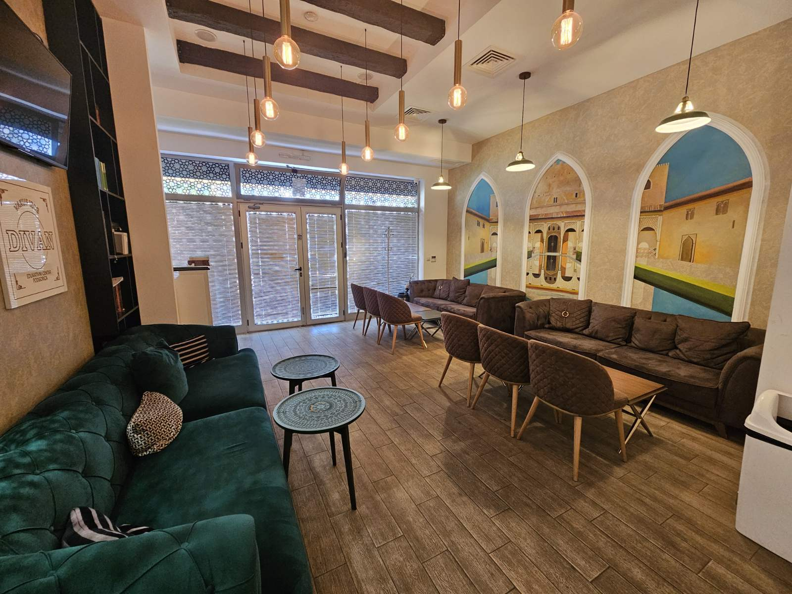
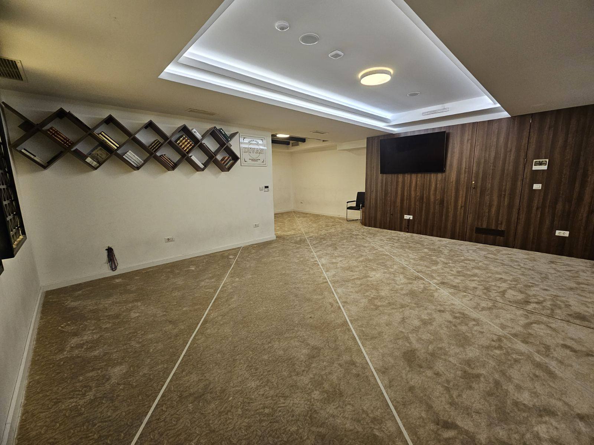
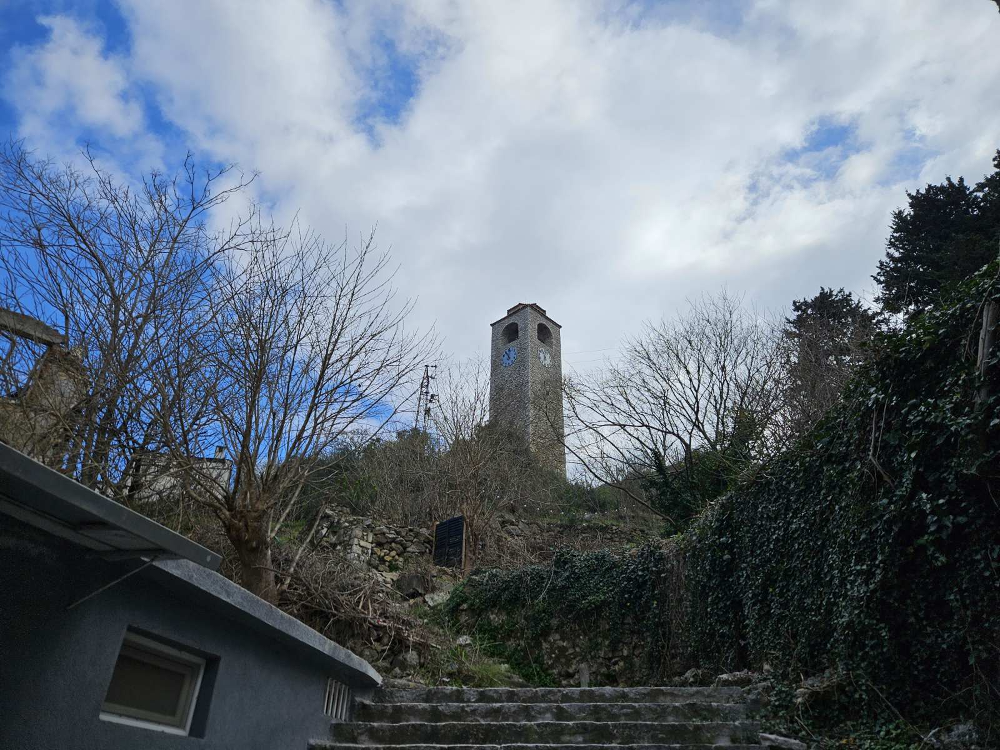
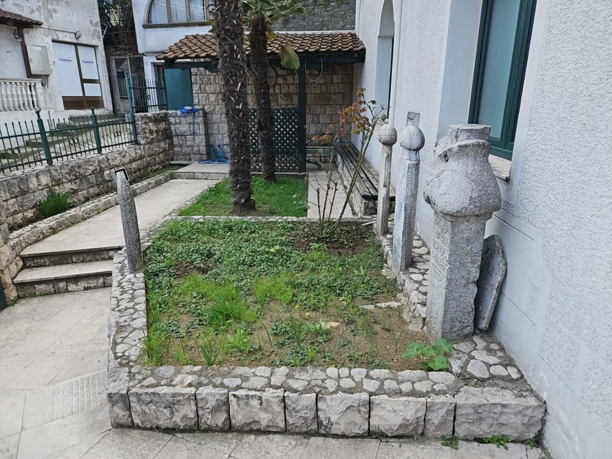
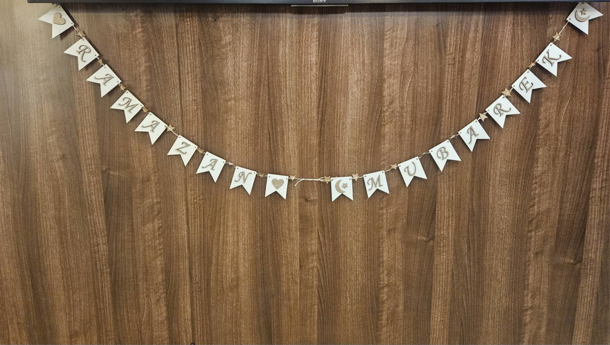
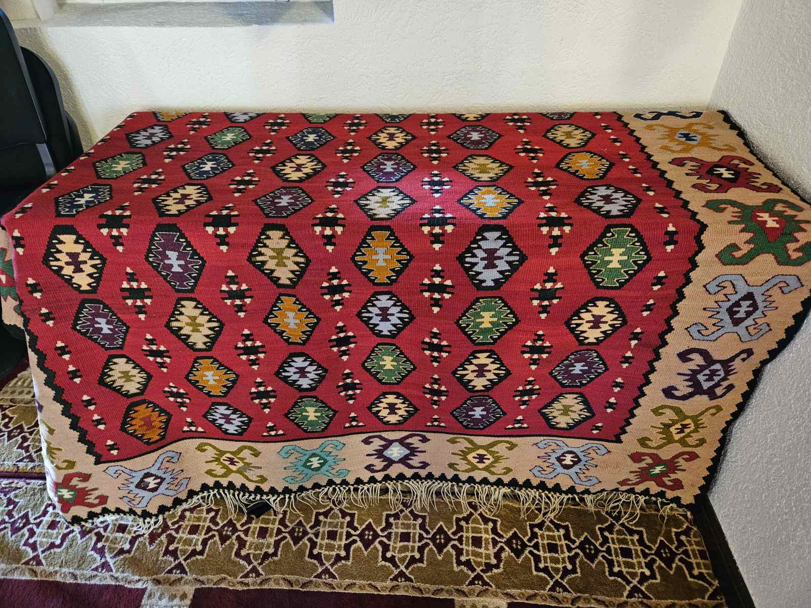
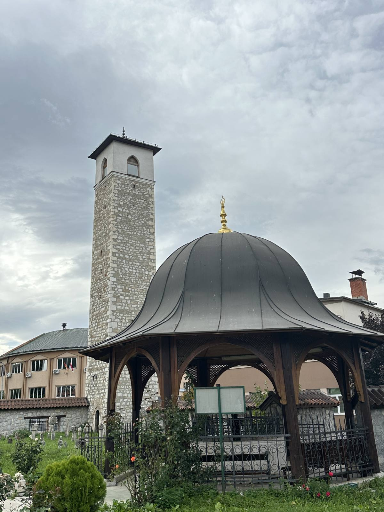
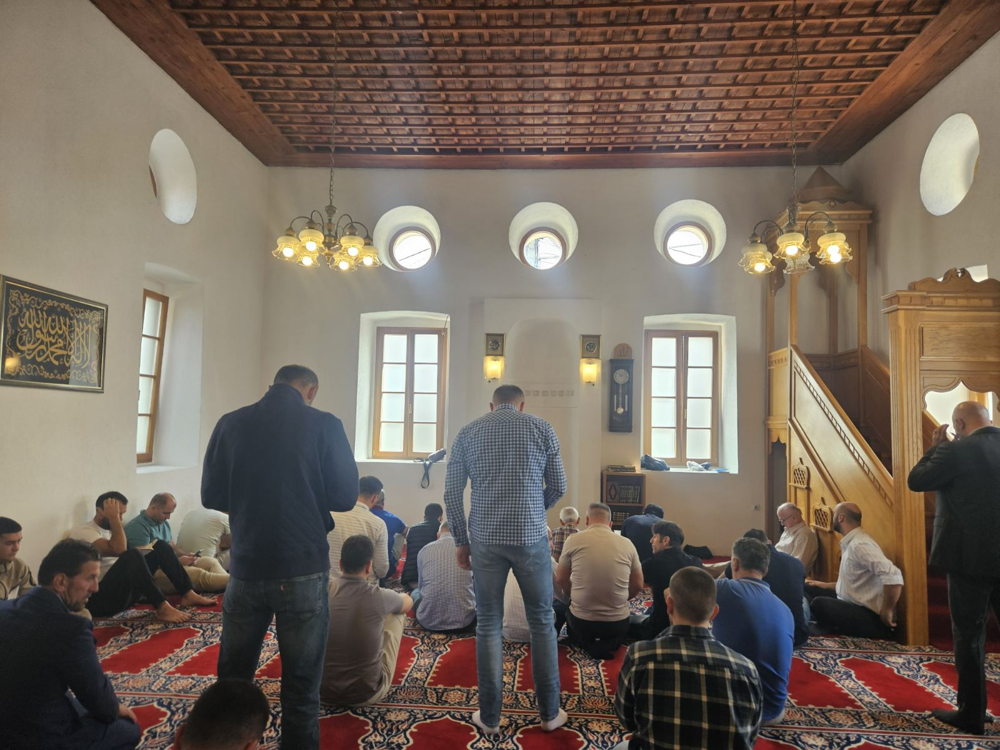

Džamija Omerbašića

Sahat kula u Podgorici
Sahat kula u Podgorici

Kučanska džamija u Rožajama

Minare Satrodoganske džamije u Podgorici

Muslimanska soba-prostorija u okviru edukativnog centra “Divan” u Podgorici

Vakuf – IZCG DIVAN, edukativni centar Podgorica
Vakuf – IZCG DIVAN, edukativni centar Podgorica

Tuzi, džamija
Medresa “Mehmed Fatih” Tuzi

Ulicnj Turbe porodice Pulti

Sahat kula u Ulcinju

Nišani u haremu džamije
Munara fotografisano na Islamskom centru u Baru
Na slici je prikazan drugi sprat Džamije na vrhu pazara u Ulcinju namijenjen za žene

Na slici je prikazan prvi sprat Džamije na vrhu pazara u Ulcinju namijenjen za muškarce

Fotografisano u susret Ramazanu u edukativnom centru “Divan” u Podgorici

Slikano u Starom Baru u jednoj od džamija
<

Sahat kula u Pljevljima

Husein-pašina džamija u Pljevljima

Sebilj u Tuzima - česma koja spaja

Džemat u Osmanagića džamiji u Podgorici